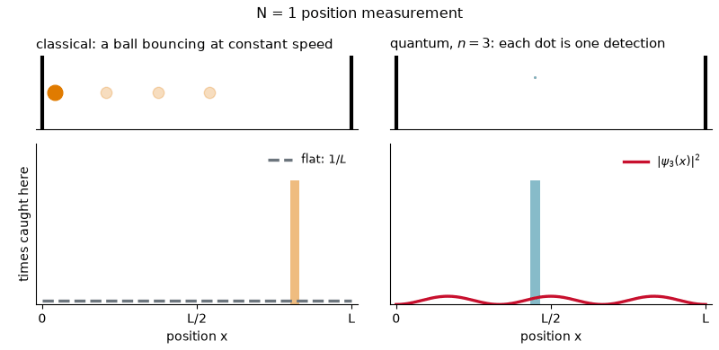
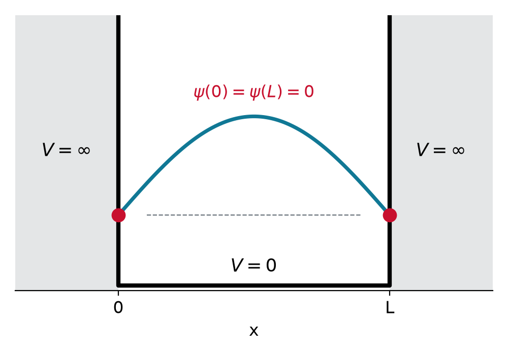
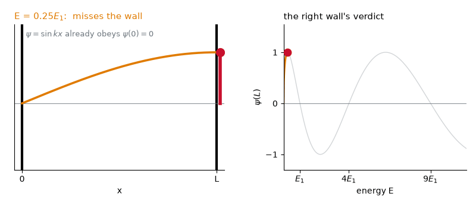
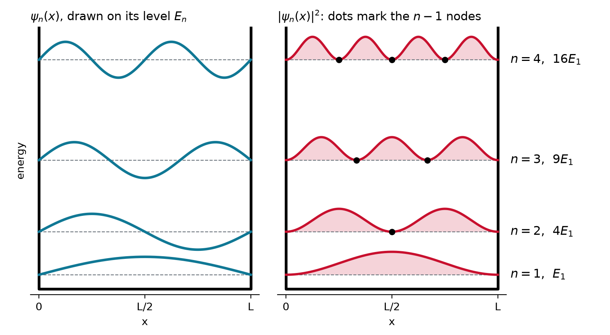
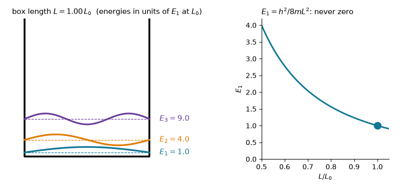
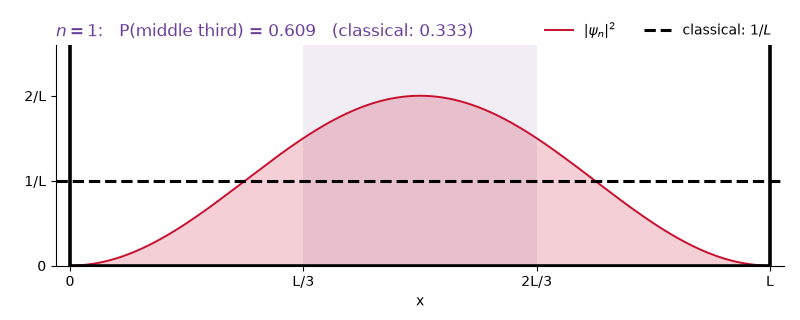
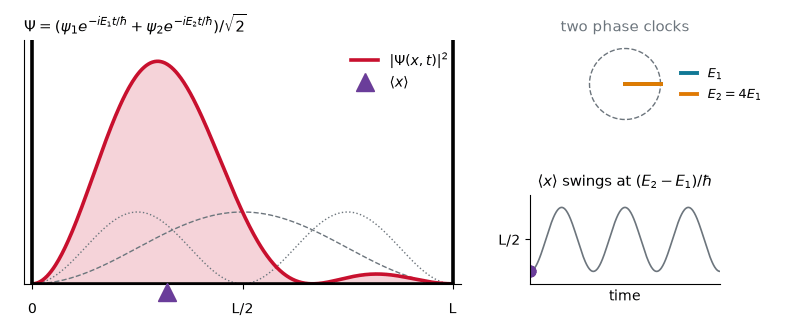
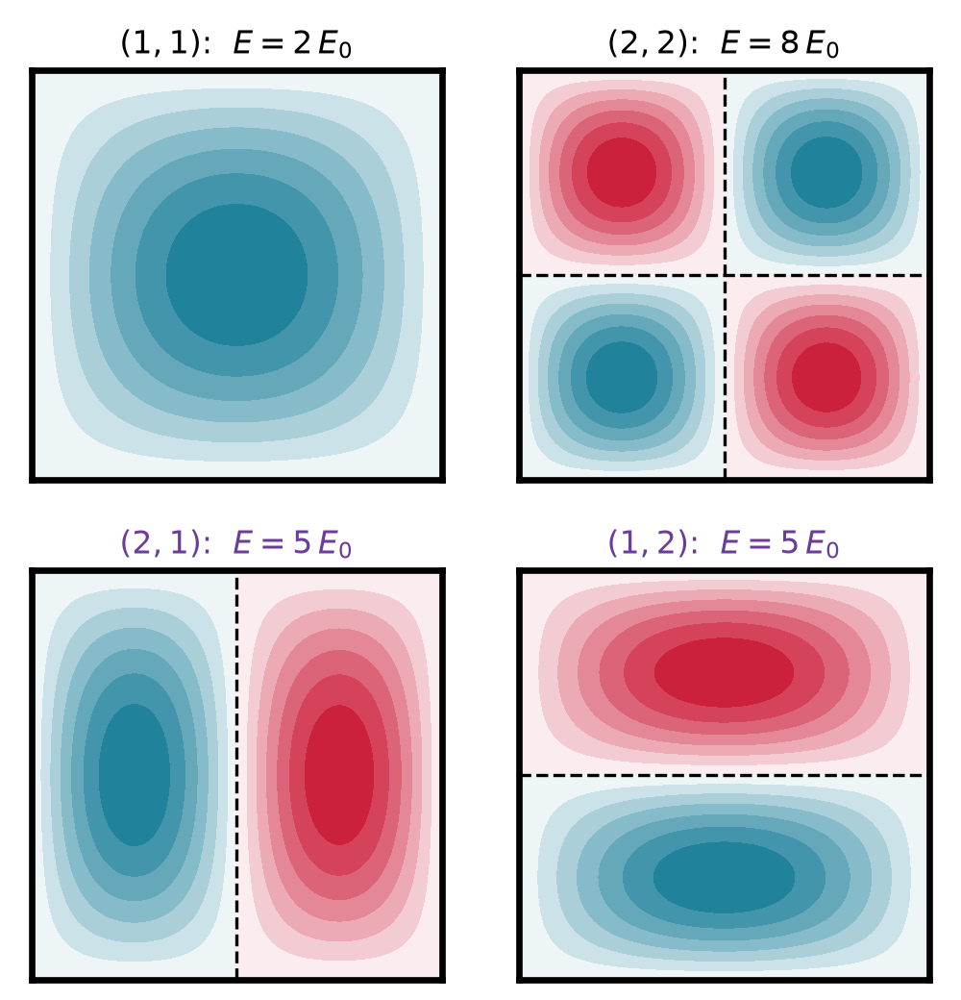
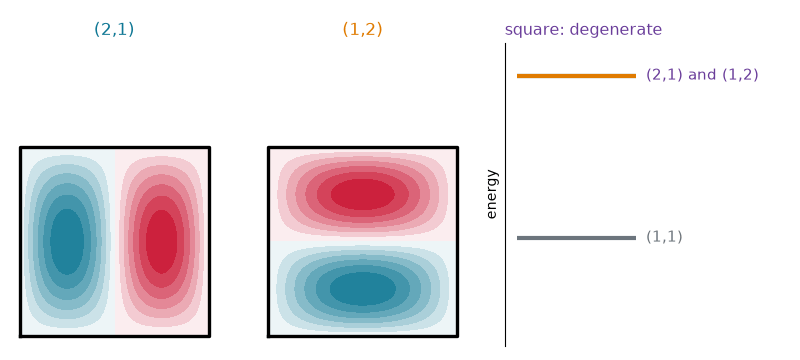

Chem 3240 · Lecture 3.2


Inside, V = 0: only kinetic energy
-\frac{\hbar^2}{2m}\frac{d^2\psi}{dx^2} = E\,\psi, \qquad 0 < x < L
Walls, V = \infty: the particle is never there, so
\psi(0) = \psi(L) = 0
-\frac{\hbar^2}{2m}\,\psi'' = E\,\psi \quad\Longrightarrow\quad \psi'' = -k^2\,\psi, \qquad k = \frac{\sqrt{2mE}}{\hbar}
The clamped string’s equation from Chapter 2, so the same solutions:
\psi(x) = A\cos kx + B\sin kx
\begin{aligned} \psi(0) = 0 &\quad\Rightarrow\quad A = 0 \\ \psi(L) = 0 &\quad\Rightarrow\quad B\sin kL = 0 \quad\Rightarrow\quad kL = n\pi, \quad n = 1, 2, 3, \dots \end{aligned}

The fit sets the wavelength; de Broglie turns it into momentum:
\lambda_n = \frac{2L}{n} \quad\Longrightarrow\quad p_n = \frac{h}{\lambda_n} = \frac{nh}{2L} \quad\Longrightarrow\quad E_n = \frac{p_n^2}{2m}
E_n = \frac{n^2h^2}{8mL^2}, \qquad n = 1, 2, 3, \dots
Choose B so that \psi_n = B\sin(n\pi x/L) is normalized.
\int_0^L B^2\sin^2\frac{n\pi x}{L}\,dx = B^2\,\frac{L}{2} = 1 \quad\Longrightarrow\quad B = \sqrt{\frac{2}{L}}
Over whole half-waves \sin^2 averages to \tfrac{1}{2}: its hills fill its valleys, so the integral is half the box length.

\psi_n(x) = \sqrt{\frac{2}{L}}\,\sin\frac{n\pi x}{L}

Find the gap E_2 - E_1 for an electron in a 1 nm box and for a 1 g marble in a 1 cm box. Compare each with k_BT \approx 4\times10^{-21} J at room temperature.
E_2 - E_1 = \frac{3h^2}{8mL^2} = \begin{cases} 1.8\times10^{-19}\ \text{J} \approx 1.1\ \text{eV} & \text{electron, 1 nm} \\[4pt] 1.6\times10^{-60}\ \text{J} & \text{marble, 1 cm} \end{cases}
Electron: 40 times k_BT, the levels stand apart. Marble: 10^{-40}\,k_BT, a continuum.
In \psi_1 and in \psi_2, what is the probability of finding the particle in the middle third, L/3 < x < 2L/3? Classically it is 1/3.
P_n = \frac{2}{L}\int_{L/3}^{2L/3}\sin^2\frac{n\pi x}{L}\,dx = \frac{1}{3} + \frac{\sin(2n\pi/3) - \sin(4n\pi/3)}{2n\pi}
P_1 = \frac{1}{3} + \frac{\sqrt{3}}{2\pi} = 0.61 \qquad\qquad P_2 = \frac{1}{3} - \frac{\sqrt{3}}{4\pi} = 0.20

Find \langle p\rangle and \langle p^2\rangle in the state \psi_n, with k_n = n\pi/L.
\langle p\rangle = -i\hbar\int_0^L \psi_n\,\psi_n'\,dx = -i\hbar\left[\tfrac{1}{2}\psi_n^2\right]_0^L = 0
\hat{p}^2\psi_n = -\hbar^2\psi_n'' = \hbar^2k_n^2\,\psi_n \quad\Longrightarrow\quad \langle p^2\rangle = \hbar^2k_n^2 = 2mE_n
\Psi(x,t) = \sum\nolimits_n c_n\,\psi_n(x)\,e^{-iE_nt/\hbar}

|\Psi|^2 = \tfrac{1}{2}(\psi_1^2 + \psi_2^2) + \textcolor{#6a3d9a}{\psi_1\psi_2\cos\omega t}
Mean: only the cross term moves it
\langle x\rangle = \frac{L}{2} - \textcolor{#6a3d9a}{\frac{16L}{9\pi^2}\cos\omega t}
Separate variables, \psi = X(x)\,Y(y)\,Z(z): each factor is a 1D box, and the energies add
E_{n_xn_yn_z} = \frac{h^2}{8m}\left(\frac{n_x^2}{a^2} + \frac{n_y^2}{b^2} + \frac{n_z^2}{c^2}\right)


In a cube, E = (n_x^2 + n_y^2 + n_z^2)\,E_0. How many states have E = 9E_0? And E = 14E_0?
9 = 2^2 + 2^2 + 1^2: \quad (2,2,1),\ (2,1,2),\ (1,2,2) \quad\Longrightarrow\quad \text{3 states}
14 = 3^2 + 2^2 + 1^2: \quad \text{every ordering of } (3,2,1) \quad\Longrightarrow\quad \text{6 states}
Not (3,0,0): n = 0 means \psi = 0, no particle.
Walls turn a free particle into a standing wave: only whole half-waves fit, so E_n = n^2h^2/8mL^2. The lowest level sits above zero, the levels climb as the box shrinks, and |\psi_n|^2 has n-1 nodes that blur into the classical flat distribution at large n. A superposition sloshes at (E_2 - E_1)/\hbar, and in 2D and 3D, symmetry makes levels degenerate.
Chem 3240 · Quantum Mechanics